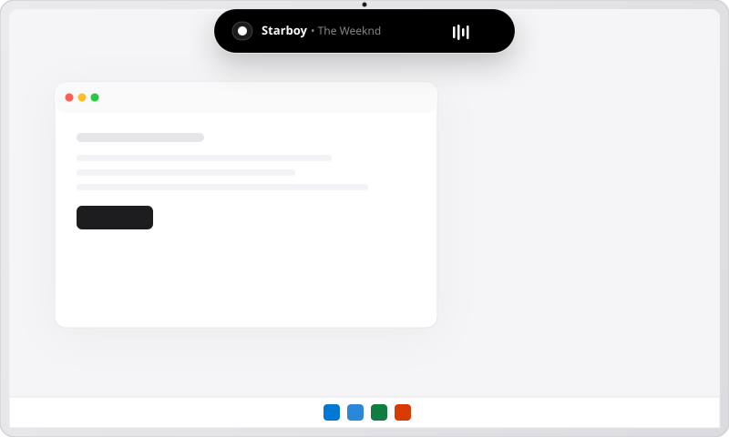
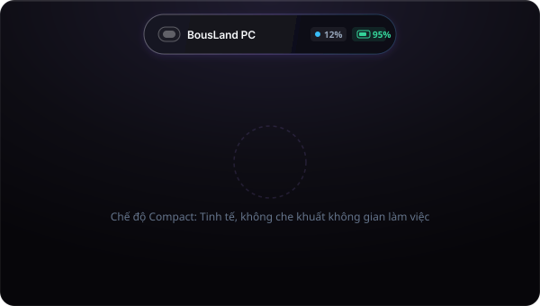
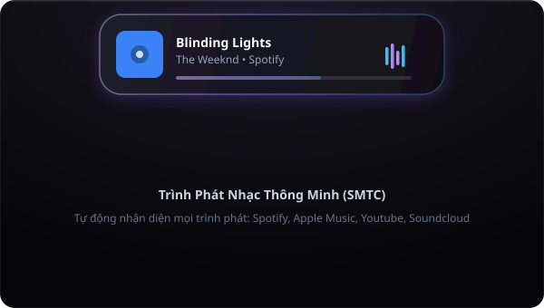
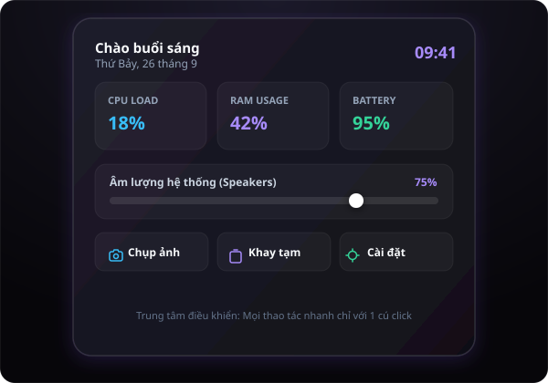
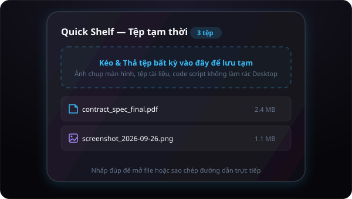

Trải nghiệm tương tác chất lỏng mượt mà tựa giọt nước ngay mép trên màn hình. Đồng bộ Core Audio, điều khiển nhạc SMTC, giám sát phần cứng và lưu tệp tạm thời không làm rác Desktop.

Bấm thử các nút điều khiển để xem Island co giãn chất lỏng và phản hồi với âm nhạc, âm lượng và trạng thái máy tính.
Mọi thành phần trong BousLand được chau chuốt kỹ lưỡng với ngôn ngữ thiết kế kính mờ Fluent Aero và hiệu ứng đàn hồi cao cấp.

Ẩn hiện mềm mại ở viền trên màn hình laptop hoặc màn hình rời. Cho bạn biết ngay nhịp tim hệ thống (CPU, RAM, Pin) mà không chiếm đoạt không gian làm việc.

Tương thích hoàn hảo với giao thức Windows SMTC. Tự động nhận diện bài hát từ Spotify, YouTube, Apple Music, Edge và Chrome với sóng nhạc equalizer chuyển động tức thì.

Mở Trung tâm điều khiển toàn diện với 1 click. Giám sát phần cứng thời gian thực, điều chỉnh âm lượng từng ứng dụng và phím tắt thao tác nhanh.

Kéo bất kỳ file nào từ trình duyệt hoặc ứng dụng thả thẳng vào BousLand. Tệp được lưu trữ gọn gàng ở khay tạm Quick Shelf, sẵn sàng kéo thả đi bất cứ đâu.
Không chỉ là giao diện đẹp mắt, BousLand kết nối sâu với Windows API để đạt độ mượt mà và tin cậy cao nhất.
Tương tác trực tiếp với Windows WASAPI. Nhận diện thay đổi âm lượng tức thì từ phím bấm bàn phím hoặc tai nghe Bluetooth với thanh trượt âm sắc nét.
Tự động nhận diện mọi trình phát đa phương tiện. Hỗ trợ đầy đủ Spotify, Apple Music, YouTube Music, SoundCloud trên trình duyệt Chrome và Edge.
Đo nhịp tim CPU, RAM, Ổ đĩa và Pin với tần số 1Hz bằng sysinfo Rust. Cảnh báo thông minh khi CPU hoặc RAM vượt ngưỡng 90% để bảo vệ máy.
Kéo và thả tệp bất kỳ lên đầu màn hình để lưu tạm thời. Không cần lưu file bừa bãi ra màn hình Desktop, dọn sạch không gian làm việc.
Tự động phân loại nội dung sao chép thành Văn bản, Liên kết, Đoạn mã và Mã màu. Dữ liệu chỉ lưu cục bộ trên RAM và không bao giờ gửi ra ngoài.
4 chủ đề cao cấp: Onyx Tối Giản, Kính Mờ Acrylic, Mica Fluent Windows 11 và Titanium Slate. Bảng mã màu nhấn không giới hạn đồng bộ toàn hệ thống.
Được tối ưu ở cấp độ hệ thống với mã máy Native C/Rust. Không cõng máy ảo cồng kềnh, không giật lag, giữ trọn vẹn 100% FPS khi chiến game và đồ họa.
Tự động nhận diện cửa sổ toàn màn hình (DirectX 11/12, Vulkan) qua Win32 API. BousLand lập tức đóng băng render để hoàn trả 100% CPU và GPU cho khung hình game.
Mọi xử lý âm thanh, clipboard và lưu tệp chỉ tồn tại trên RAM máy tính của bạn. Hoàn toàn không có mã theo dõi telemetry, không gửi dữ liệu ra bên ngoài.
Biên dịch trực tiếp ra mã nhị phân Windows x64. Tận dụng runtime WebView2 có sẵn trong Windows 10/11 thay vì phải đóng gói thêm cả trình duyệt Chromium 200MB.
Mọi bản cập nhật đều mang lại trải nghiệm tối ưu, ổn định và các tính năng mới cho Windows.
HKCU\Software\Microsoft\Windows\CurrentVersion\Run.
HKCU\Software\Microsoft\Windows\CurrentVersion\Run), tự động khởi động khi người dùng đăng nhập Windows.
BousLand được thiết kế chuyên biệt và tối ưu hóa 100% cho Windows 10 và Windows 11 (64-bit). Ứng dụng hỗ trợ cả màn hình laptop thông thường, màn hình rời siêu rộng (Ultrawide) và thiết lập đa màn hình.
BousLand tích hợp cơ chế Auto-Update thông minh liên kết trực tiếp với GitHub Releases của tác giả. Khi có bản cập nhật mới, ứng dụng sẽ thông báo trong Cài đặt và bạn chỉ cần bấm "Cài đặt & Khởi động lại" để hoàn tất trong 3 giây.
Bạn có thể nhấn tổ hợp phím tắt toàn cầu Ctrl + Shift + B để ẩn Island lên mép trên màn hình (để lại một vạch sáng mỏng tinh tế). Khi rê chuột vào hoặc bấm lại tổ hợp phím, BousLand sẽ trồi xuống ngay lập tức.
Hoàn toàn an toàn. BousLand tuân thủ triệt để nguyên tắc Local-First: không yêu cầu tài khoản, không có mã theo dõi telemetry, không lưu trữ dữ liệu khay nhớ tạm ra ngoài ổ đĩa máy tính của bạn.
Tải về miễn phí ngay hôm nay. Trải nghiệm không gian Dynamic Island thông minh, mượt mà và sang trọng.
Phiên bản 1.0.12 • Tương thích Windows 10 / 11 • 100% Sạch & An toàn